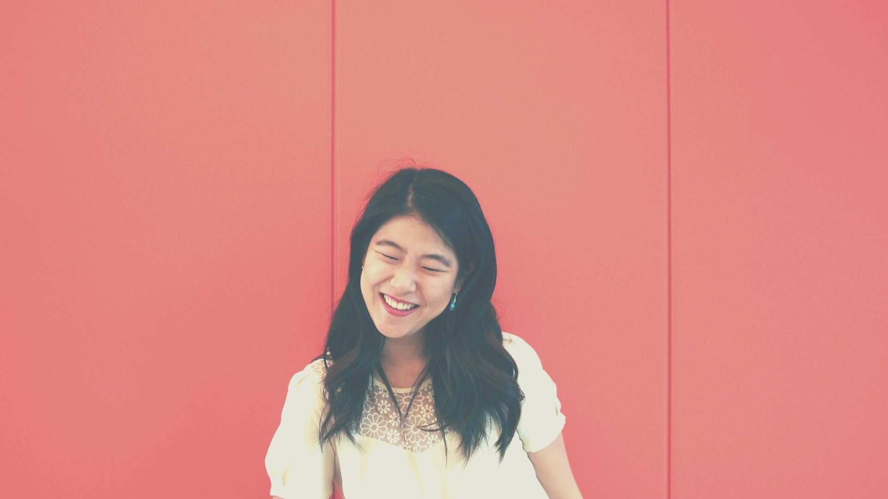

about
me.
filmmaker | podcaster | engineer.

loading
filmmaker | podcaster | engineer.
My name is Da Eun Kim, or 김다은. I'm the only child of 2 Korean immigrants, and my nuclear family immigrated to the US when I was 10 months old. Since then, we have moved around the US as well as Asia over 20 times in my life. My early life was largely shaped by my parents, our transient lifestyle, and violin.
I very strongly identify as an Asian American womxn, having dealt with many lived experiences that Asian Americans, womxn, and womxn of color resonate with. I believe in many ways, I am the manifestation of my ancestors' wildest dreams, and I hope to honor my history, present, and self no matter what.
I'm currently pursuing an MFA in Film & TV Production at USC. My films and stories all have the throughline of uncovering underrepresented narratives, whether it's the everyday struggle of introducing your non-Anglicized name, or the intergenerational trauma spanning generations.
I've been deeply impacted by Coco, Avatar the Last Airbender, and Percy Jackson - all media geared towards children that still touch on meaningful themes of knowing your history, family, and self-actualization. I hope to craft similar stories that draw inspiration from Asian folktales, in hopes that fellow hyphenated Asians can learn more about their heritage through this storytelling.
I truly believe media is one of the most impactful influences in youth; I remember feeling represented when I first watched Mulan on VHS, and I hope future generations can continue to feel seen and empowered.
Before USC, I was in a very different field. I most recently worked as a software engineer at Google. I've worked at the Bay Area, New York City, and Los Angeles offices over the course of 5 years.
In those 5 years, I grew as an engineer, teammate, and adult, learning how to navigate the workplace and about the infrastructure at a large company like Google. However, I decided to make a career change because I yearned for the opportunity to tell personal stories. This new chapter is both exciting and terrifying, as I'll be spending 100% of my time and efforts being creative. I'm really excited to take what I've learned from the tech industry, oftentimes known as one of the most innovative sectors, and bring a fresh perspective to Hollywood.
I'm a firm believer that technology is a means, not an end. If I were to go back to tech, I hope it will be in the capacity of civic tech: understanding how tech can better serve marginalized communities, as well as improve centuries-old processes.
I hold a MS in Computer Science and a BS in Symbolic Systems from Stanford University.
I co-host and co-produce bamboo & glass, a podcast by 2 Asian American womxn sharing the underrepresented perspectives that shape our lifelong journey of learning and unlearning.
On it you will hear Asian Americans reckoning with their place in the world and discovering the abundant possibilities of who they can choose to be (in their careers, families, relationships, etc.). You should listen if you've been searching for the right words or inspiration to start important conversations with yourself or loved ones.
Topics we've covered include: the role of social media in propelling BLM, navigating the workplace, career changes, the intersection of Asian American identity and masculinity.